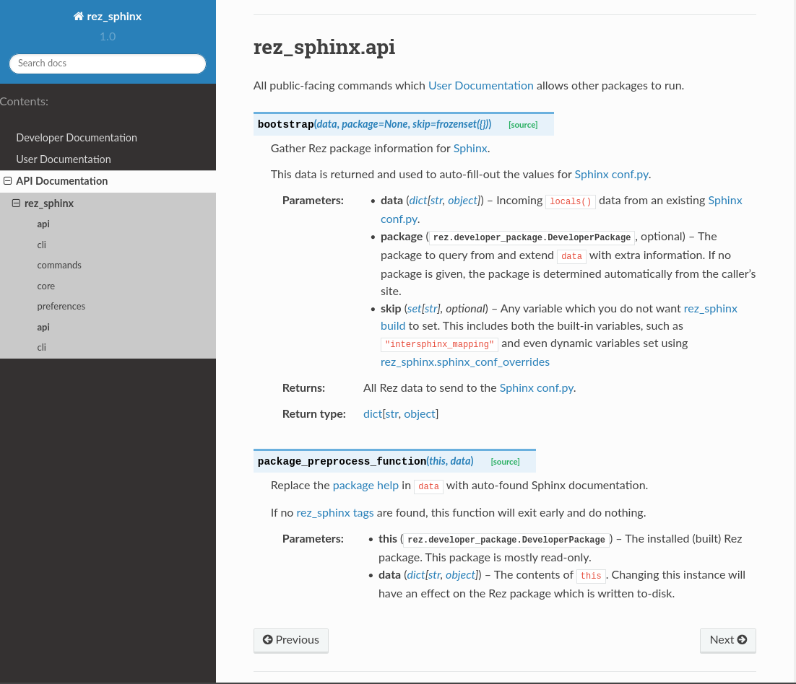

Using sphinx-rtd-theme¶
TODO make sure the tutorials in this page work TODO make sure that scope(“config”) doesn’t accidentally apply to downstream Rez packages
readthedocs.io has been a huge boon for the Python community. Its website front end for hosting documentation is a fantastic resource. It also open sourced a sphinx theme called sphinx-rtd-theme.
Here’s what the default sphinx theme, alabaster looks like:

And here’s the same page, using sphinx-rtd-theme.
rez_sphinx build run supports changing your documentation theme on the fly.
Modifying Your Sphinx Theme¶
Themes can be editted globally, across all Rez packages, or modified within individual Rez packages. Here’s how.
Globally Choosing A Sphinx Theme¶
TODO make sure this tutorial works
Define a rezconfig.py like you normally would and add this block into it.
optionvars = {
"rez_sphinx": {
"extra_requires": ["sphinx_rtd_theme-1+<2"],
"sphinx_conf_overrides": {
"html_theme": "sphinx_rtd_theme",
},
},
}
If you haven’t installed sphinx-rtd-theme as a Rez package before, do so before continuing.
rez-pip --install sphinx-rtd-theme==1.0.0 --python-version=2 --release
rez-pip --install sphinx-rtd-theme==1.0.0 --python-version=3 --release
You’re ready to build. If you haven’t set up your documentation once before, follow the steps in Getting Started. Otherwise, run your usual build command:
rez-test your_package_name_here build_documentation
Now your documentation should be running the sphinx-rtd-theme.
Locally Choosing A Sphinx Theme¶
Use A Local rezconfig.py¶
If you want a theme on a specific Rez package and you don’t want enforce it across all users, you have two options:
Repeat the same steps in Globally Choosing A Sphinx Theme but, instead of installing rezconfig.py in a central location, just write the file to your local user anywhere. Like
~/rezconfig.py.When building, run
REZ_CONFIG_FILE=~/rezconfig.py rez-test your_package_name_here build_documentation
Define a scoped package config¶
TODO : Make sure this works!
If you don’t like all that typing (I don’t blame you) or want something more permanent that persists on a Rez package, there’s another option. In your package.py add this:
with scope("config") as config:
config.optionvars.update(
{
"rez_sphinx": {
"extra_requires": ["sphinx_rtd_theme-1+<2"],
"sphinx_conf_overrides": {
"html_theme": "sphinx_rtd_theme",
},
},
}
)
Now you can just run rez-test your_package_name_here build_documentation
without worry. Even if someone else builds the Rez package, this will still work.
Parting Thoughts¶
If you can define the theme globally, Globally Choosing A Sphinx Theme is usually the best option. However if you need a local solution, I highly recommend Define a scoped package config over Locally Choosing A Sphinx Theme because it has the most consistent results across multiple users. Albeit at the expense of more hard-coding into the Rez package.
That’s a lot to know. The lengths mankind goes just for a few pretty colors, am I right?
Anyway, User Documentation actually has a ton of configuration settings like this one. To learn more, see Configuring rez_sphinx.